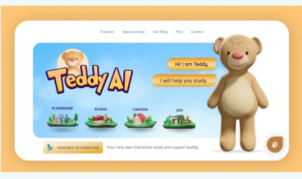
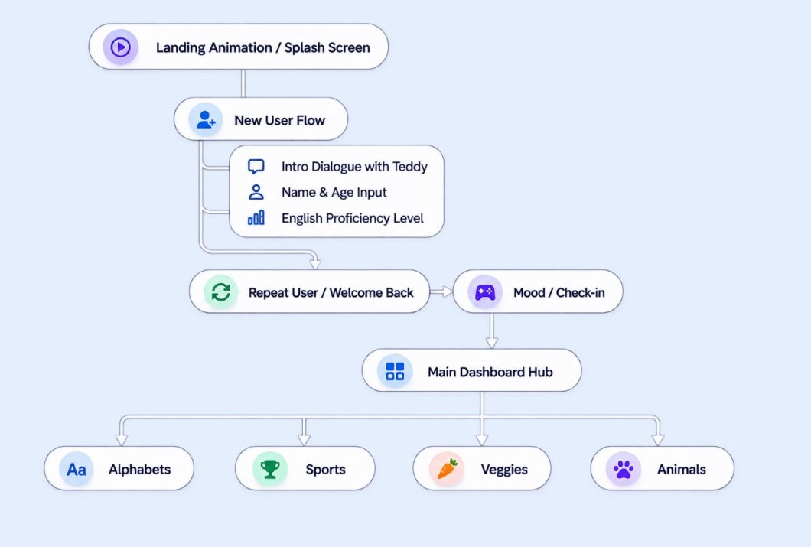
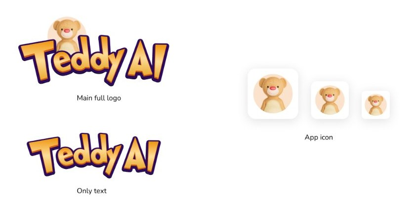
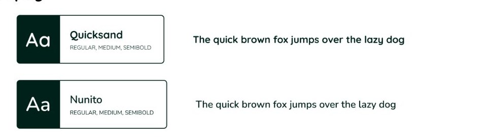
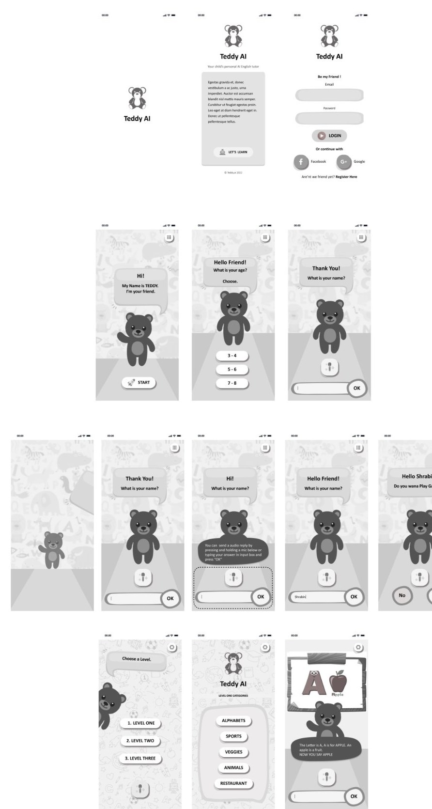

Traditional educational apps and e-learning platforms are often text-heavy, dry, and lack emotional engagement. For young students, language learning and early skill building can feel intimidating, repetitive, and isolating without personalized guidance.
Teddy AI introduces an interactive, conversational AI companion (“Teddy”) that guides students through friendly dialogues, voice-activated prompts, age and skill assessments, and gamified learning modules (Alphabets, Sports, Veggies, Animals, Restaurant).


Primary: evokes warmth, approachability, and comfort.
Secondary: provides friendly contrast for interactive buttons and progress indicators.
Corporate/Neutral Tones: Slate Grays and Clean Whites for text and card containers.

| Style | Font size | Line height | Default style |
|---|---|---|---|
| This is Heading One | 56 px | 82 px | Bold |
| This is Heading two | 42 px | 62 px | Bold |
| This is Heading three | 32 px | 47 px | Bold |
| Pragraph Headings | 24 px | 35 px | Semibold |
| Paragraph Body, Buttons | 18 px | 26 px | Regular |
